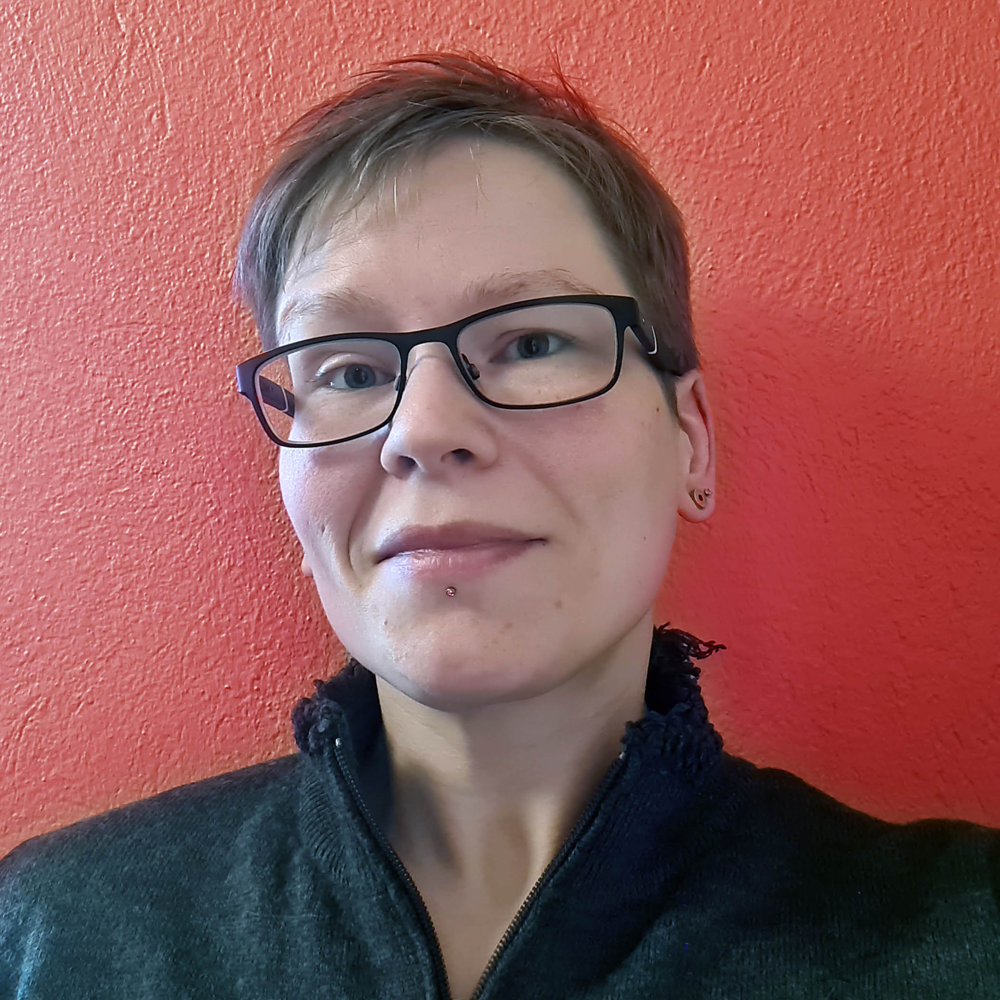
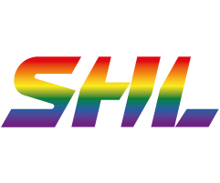

Mitt intresse för kod började tidigt. Pappa var självlärd databasadministratör och genom honom blev jag nyfiken om datorer i allmänhet.
Jag har alltid varit "duktig på datorer" och har lätt för att lära mig ny mjukvara och teknik.
Jag gillar strukturen med kod och programmering. Taggar som måste stängas. Semikolon som måste sitta på rätt plats. Samtidigt finns det en sådan flexibilitet och valfrihet; oändliga möjligheter.
The most damaging phrase in the language is.. it's always been done this way
Programmering i allmänhet, och definitivt webbutveckling, kommer med nya förändringar, vad känns som dagligen. Det innebär att man måste jobba hårt för att hänga med i svängarna.
Även om mitt fokus ligger på frontend för tillfället, är jag också mycket intresserad av backend och ser fram emot att lära mig mer.
När det gäller hemsidor är jag glad i ren och avskalad design, och lägger stor vikt vid läsbarhet och flexibilitet. Idag använder vi alla sorters enheter med alla sorters upplösningar för att surfa på nätet, och jag tycker det är nödvändigt att producera hemsidor som fungerar för alla.
Jag älskar design, och har spenderat fler timmar än jag vill räkna, med bilder och typsnitt för att få det att se ut som jag tänkt mig. Till varierande grader av lycka. Jag har lärt mig att använda mig av Adobe Photoshop, Illustrator, Gimp, PaintShopPro och har även spenderat en hel del tid med InDesign.
Programming isn't about what you know; it's about what you can figure out.
I flera år hade jag positionen som raid leader i ett av världens 30 bästa guild i World of Warcraft, och ledde en grupp med spelare mot svåra bossfighter. Härifrån lärde jag mig mycket om ledarskap och gruppdynamik.

På fritiden tittar jag gärna på hockey, och följer HockeyAllsvenskan och Svenska Hockeyligan (SHL), samt alla större turneringar som olympiska spelen, VM och Euro Hockey Tour.
Andra intressen inkluderar att uttrycka mig kreativt genom sömnad, måleri och smyckestillverkning, och jag tar gärna promenader till stranden med min hund.
Java is to JavaScript what car is to Carpet.